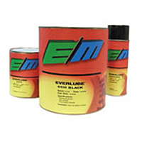

Everlube 620C is a thermally cured MoS2 based solid film lubricant with an
organic binder system. Everlube 620C provides very good wear life, goodabrasion resistance and performs best in higher load carrying applications.
Everlube 620C is also qualified to MIL-L-8937D, MIL-L-46010E Ty 1 and AS-5272
Ty. 1. Everlube 620C is purchased by a wide variety of markets, including
Aerospace and Medical.
Ref : http://secure.silmid.com/ENG/product/__EVC620CUSQ__/LUBN/Lubricants%20%20Aerospace/Everlube/EVERLUBE%20620C%20CONCENTRATE%20USQ